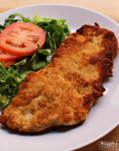
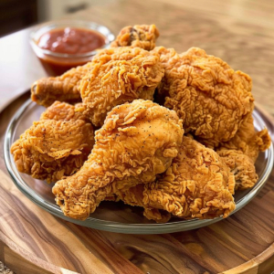
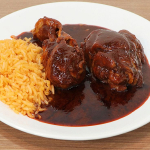
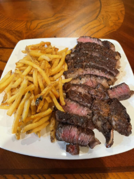
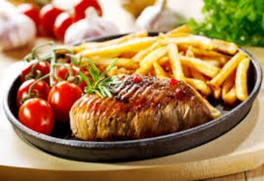
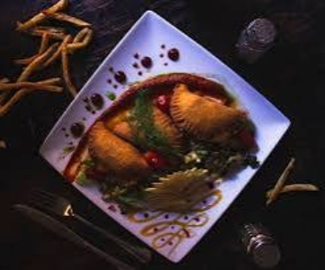
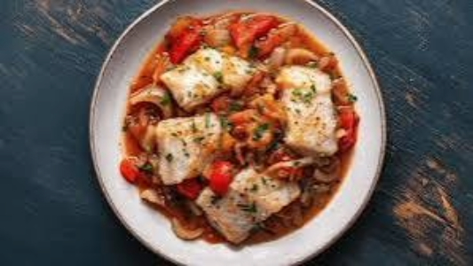
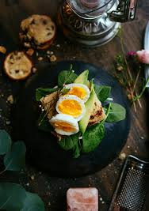

NUESTRO MENÚ COMPLETO

Burrito
Los ingredientes son: una tortilla de maíz con carne o pueden llevar queso. bordado de tomate encima

Albóndigas
Los ingredientes son: cane molida y arroz para que se haga en bolitas tambien tiene más ingredientes como el caldo que es preparado con salsa de tomate.

Torta Cubana
Los ingredientes son: una torta grande que lleva carne, jamón con pollo y no le puede faltar el queso amarilla con su lechuga y tomate como chiles envinagre.

Milanesa
Los ingredientes son: Milanesa: Un filete grande, probablemente de pollo o ternera, cubierto con una capa dorada y crujiente de pan rallado. En salada verde: Un acompañamiento de lechuga fresca. Tomate: Rodajas de tomate rojo fresco sobre la ensalada.

Pollo frito
Pollo frito: Varias piezas de pollo (muslos, alitas, etc.) con una cobertura dorada y muy crujiente, que es característica del pollo frito. Se pueden ver algunas motas de pimienta negra en la cobertura. Salsa: En el fondo, un pequeño recipiente de vidrio con una salsa de color rojizo, que podría ser kétchup, salsa barbacoa o alguna otra salsa para mojar.

Mole poblano
Los ingredientes son: Mole Poblano: La salsa espesa y oscura de color marrón rojizo que cubre las piezas de pollo. El mole poblano es complejo y tradicionalmente contiene una mezcla de chiles, especias, frutos secos, chocolate y otros ingredientes. Pollo: Se ven varias piezas de pollo (posiblemente muslos o piernas) bañadas en la salsa de mole. Arroz rojo/mexicano: Una porción de arroz de color anaranjado/rojizo al lado del pollo. Este tipo de arroz es común en la cocina mexicana y se cocina con tomate y otras especias.

Steak Frites
Bistec (o filete de carne): La carne está cortada en rebanadas gruesas, mostrando un interior rosado en el centro, lo que indica un punto de cocción medio. La superficie tiene un buen sellado y se aprecian hierbas o especias y sal gruesa por encima. Podría ser un corte como el "flat iron steak" o similar. Patatas fritas: Una generosa porción de patatas fritas, con un color dorado y aparentemente crujientes. Se les ve algo de condimento, posiblemente sal y pimienta.

Carne a la parrilla
Los ingredientes son: Bistec / Filete de carne: Un trozo de carne con marcas de parrilla, aparentemente bien cocido, y posiblemente rociado con algún tipo de salsa o glaseado. Tiene una ramita de romero o una hierba similar por encima. Patatas fritas: Una porción generosa de patatas fritas, con un color dorado. Tomates cherry: Un racimo de tomates cherry frescos, que sirven como guarnición.

Empanadillas
Los ingredientes son: Salsa: El plato está bañado en una salsa de color rojizo/marrón, con puntos de salsa oscura decorando el borde del plato. Podría ser una salsa picante, de tomate o alguna reducción. Guarnición verde: Debajo de las empanadillas, hay una base de vegetales verdes, que podría ser una ensalada, verduras salteadas o una mezcla de hierbas. También se ven hojas de cilantro fresco. Decoración: El plato está adornado con líneas de una salsa amarilla o puré (posiblemente mayonesa o una salsa a base de mostaza), pequeños tomates cherry o grosellas rojas, y lo que parece ser una hoja o un vegetal tallado de forma decorativa (posiblemente de pepino o calabacín).

Pescado blanco
Los ingredientes son: Pescado blanco: Trozos de pescado blanco, que parecen ser lomos o filetes, cocidos en la salsa. Podría ser bacalao, merluza o algún otro pescado de carne firme. Tomate: trozos de tomate rojo (posiblemente cherry o en gajos) y la base de la salsa es de color rojizo, lo que indica la presencia de tomate. Cebolla/Chalotas: trozos de cebollas o chalotas cocidas en la salsa. Champiñones u otros hongos: trozos de champiñones o algún tipo de hongo en la salsa. Hierbas frescas: El pescado y la salsa están salpicados con hierbas picadas, probablemente perejil u otra hierba verde que le da un toque de color y frescura. Salsa: El pescado y los vegetales están sumergidos en una salsa líquida de color rojizo/naranja, que parece ser bastante sabrosa.

Sopa de lentejas
Los ingredientes son: Lentejas: El componente principal de la sopa, se ven muchas lentejas marrones. Vegetales cortados en cubos: Se aprecian trozos de zanahoria (naranjas) y apio o vegetales de color verde claro. Es común que también lleve cebolla. Caldo/Base de la sopa: La sopa tiene una base líquida de color marrón rojizo, que es el caldo. Perejil fresco: Una ramita de perejil fresco colocada encima como guarnición. Pan: Un trozo de pan tostado o crujiente sumergido parcialmente en la sopa.

Tostadas
Los ingredientes son: Pan tostado: La base del plato. Aguacate: En rebanadas o trozos, colocado sobre el pan. Huevo cocido: Dos mitades de huevo duro o pasado por agua, mostrando la yema amarilla y la clara blanca, espolvoreadas con pimienta negra molida. Hojas verdes: Debajo del aguacate, se observa una capa de hojas verdes, posiblemente espinacas o rúcula. Hierbas/condimentos: Pequeñas ramitas de hierbas (quizás romero o tomillo) se ven sobre el aguacate y los huevos.

Tortitas de papas
Los ingredientes son: Tortitas de papa: Tres tortitas redondas y doradas, que estan hechas de papa rallada o puré de papa, probablemente con algún aglutinante y sazonadas. Ensalada verde: Una mezcla de lechuga fresca. Pepino: Rodajas de pepino. Tomates cherry: Tomates cherry cortados por la mitad o en gajos. Limón o lima: Algunas gajos de limón o lima, que sugieren que se pueden exprimir sobre la ensalada o las tortitas para dar sabor.

Alambre
Los ingredientes son: Carne: Trozos pequeños de carne, que suele ser de res (bistec). Vegetales: Se observan pimientos de colores (rojo y verde) y cebolla, cortados en trozos. Queso gratinado: Una capa de queso derretido y burbujeante que cubre la carne y los vegetales. Cilantro: Pequeñas hojas verdes picadas, probablemente cilantro, que se suelen añadir al final.

Pozole verde
Los ingredientes son: Maíz : Los granos grandes de maíz, característicos del pozole, se ven en el caldo. Caldo verde: El caldo tiene un color verde distintivo, que se logra con ingredientes como tomatillos, chiles verdes, cilantro y epazote. Carne deshebrada: Aunque no se distingue con total claridad, es común que el pozole verde lleve carne de pollo o cerdo deshebrada. trozos de pollo. Rábanos: Rodajas finas de rábano, que aportan frescura y un toque picante suave. Lechuga: Lechuga finamente picada, servida sobre el pozole. Chiles secos: Pequeños chiles rojos secos flotando en el caldo, que le dan un toque de sabor y picante.

Estofado de carne
Los ingredientes son: Carne estofada: Trozos grandes de carne oscura y tierna, que podría ser cordero o ternera. Arroz: Un lecho de arroz, posiblemente basmati o de grano largo, que parece haber sido cocinado con el jugo de la carne o especias. Frutos secos: pistachos verdes y cacahuetes o almendras tostadas de color naranja/marrón claro, esparcidos por encima. Es común en estos platos usar piñones, almendras o anacardos. Perejil fresco: Picado finamente y espolvoreado sobre la carne y el arroz, aportando color y frescura.

Carne a la parrilla
Los ingredientes son: Carne a la parrilla: trozos de carne oscura y cocida, que podrían ser bistecs o filetes de res. Están coronados con aros de cebolla morada. Vegetales salteados o al vapor: Una mezcla de vegetales de colores, incluyendo zanahorias en juliana, judías verdes y calabacín o pimiento verde cortado en tiras. Patatas asadas o salteadas: Rodajas de patata con piel, que parecen haber sido asadas o salteadas, posiblemente con hierbas y cebolla. Salsa: En una salsera aparte, hay una salsa de color rojizo con trozos, que podría ser una salsa de tomate, una salsa picante, o una reducción de carne. Adorno de tomate: Una porción de tomate cortado en forma decorativa.

Lomo saltado
Los ingredientes son: Carne de res: Trozos de lomo o bistec, salteados rápidamente. Patatas fritas: Integradas en el salteado con la carne y las verduras, absorbiendo los jugos de la cocción. Cebolla morada: Cortada en gajos grandes, visible en el salteado. Tomate: Cortado en gajos o tiras, también parte del salteado. Arroz blanco: Una porción al lado del salteado. Salsa: El plato tiene una salsa espesa y sabrosa que cubre la carne, las patatas y las verduras. Esta salsa suele ser a base de sillao (salsa de soja), vinagre, ají amarillo y otros condimentos. Cilantro fresco: Picado y espolvoreado por encima como guarnición.

Ensalada de pollo quinoa
Los ingredientes son: Pechuga de pollo (cortada en rebanadas y asada o a la plancha). Quinoa (parece ser la base de la ensalada). Calabaza o camote (cortado en cubos). Tomates cherry o uva (cortados a la mitad). Aceitunas negras (rebanadas). Semillas variadas (como semillas de calabaza, sésamo, chía, etc., esparcidas por encima). Hojas verdes (como lechuga rizada o kale, visibles debajo d e los otros ingredientes). Frijoles rojos o judías (algunos visibles entre la quinoa). Crutones o trozos de pan (algunos pequeños cubos claros).

Ensalada capresecon pesto y piñas
Los ingredientes son: Bolas de Mozzarella baby (Bocconcini o perlas de mozzarella). Tomates cherry o uva (cortados a la mitad). Hojas de lechuga (varios tipos, incluyendo lechuga rizada verde y rojiza, y posiblemente rúcula). Aderezo verde (muy probablemente pesto, por su color, textura y la presencia de hojas de albahaca) Piñones (esparcidos por encima). Hojas de albahaca fresca (como guarnición central).

Plato combinado de fideos
Los ingredientes son: Fideos finos salteados (fideos de arroz o vermicelli, con un tono dorado/marrón claro, sugiriendo salsa de soya o algún condimento). Arroz blanco (cocido). Carne de cerdo o pollo salteada (cortada en trozos, con algunos vegetales pequeños mezclados, como pimiento o cebolla).